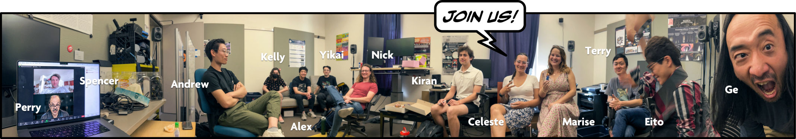
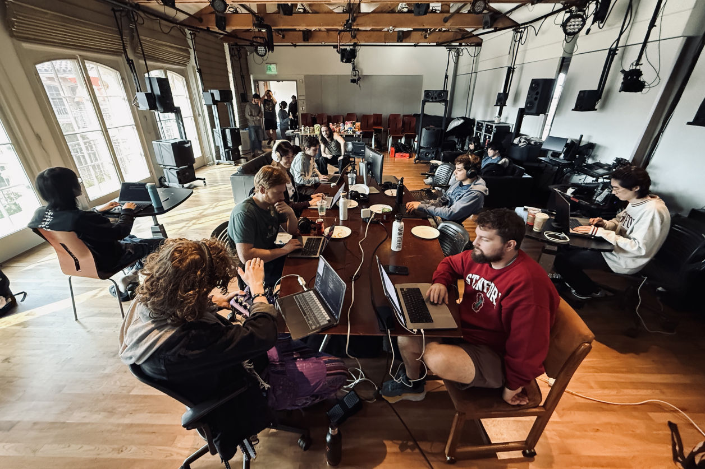

Programming languages are strange artifacts. To some programming is a means of production—a tool intended to achieve an outcome. For others, coding can be much more: a vehicle for creative expression and an intrinsically worthwhile activity. And then there is the design of programming languages, which is a craft all its own.
ChucK is an open-source, audio-driven music and graphics programming language that, over two decades, has been used in sound synthesis, algorithmic composition, instrument design, laptop and VR orchestras, musical mobile apps, physical modeling, art installations, algorithmic composition, sonification, audio analysis, live performance, video game design, as well as education in computer music.
Origin Tale
Creating the ChucK programming language back in 2002 was an act of artful design, long before I knew to call anything artful design. Ever since undergrad, I was intensely drawn to programming languages like Java, C++, and QuakeC (a custom language designed specifically to create the video game Quake); not only attuned to their functionality, but also to how they felt—the very aesthetics of using a tool. The sense of control, the possibility of "getting into a flow", and the feeling of programming as a thing to think with (not unlike the craft of writing) drew me to the design of languages. In graduate school at Princeton University, I would start to design ChucK to both function as a computer music synthesis language, but also as a tool for self expression. ChucK learned from and also departed from existing computer music languages such as Csound, Max/MSP, SuperCollider and frameworks like Synthesis ToolKit (STK). But no tool quite afforded how I wanted to feel when programming. I was intensely motivated to design my own, even as nobody was quite asking for yet another computer music language. It was also at this time that my Ph.D. advisor, Perry Cook, said to me, "whatever we do, we do it with aesthetics." While this may sound cryptic (and Perry claims to not remember saying this to me), I interpreted it to mean that even when we design ostensibly functional things like tools and technology, aesthetics matter and matter intrinsically. In other words, we can choose to design artfully.
A Strongly-timed Programming Language
It was within this aesthetics-driven context that ChucK was designed: a unified temporal mechanism for precisely manipulating and reasoning about time across drastically different timescales, from individual samples to musical events to potentially much longer durations (e.g., weeks, months, years). ChucK was the first computer music language to introduce the concept of now as a central timing construct, synchronously binding it to the audio sample stream and affording a type of temporally deterministic, sample-accurate programming model. ChucK also provides the ability to write concurrent audio code with the same timing assurances, internally synchronized by the timing directives in the code (giving rise to the idea of time-based coroutines). Together, this precise control over time and the time-based concurrent programming model form the notion of a strongly-timed audio programming language. In aesthetic terms, I wanted programming in ChucK to feel as if one had control over the flow of time (if only we had such powers "in real life!") and over parallel code execution. I tried to design the language such that a programmer might feel as if they could "become" the program—as if they are the code executing itself across control structures and time, and could precisely reason about not only what happens, but also when. I wanted a sense of assurance that, in ChucK, time does not move forward without your say-so (by explicitly "advancing time"; e.g., 100::ms => now;)—this has the practical benefit of being able to situate code clearly across time, without having to worry about traditional pitfalls of concurrent programming such as race conditions and deadlock. Overall, ChucK was designed to both function in and feel certain ways, and to have the functionality feed into the aesthetics of writing code, and in turn for the aesthetics to suggest different way of thinking and doing. As the first Turing Award winner Alan Perlis once said, "A programming language that doesn't change the way you think isn't worth learning."
Learn More about ChucK
Ge Wang. "The ChucK Programming Language." 2018. (a photocomic introduction) Excerpt from Artful Design: Technology in Search of the Sublime.
Ge Wang, Perry R. Cook, and Spencer Salazar. 2015. "ChucK: A Strongly Timed Computer Music Language." Computer Music Journal. 39:4, pp. 10-29.
ChucK homepage | ChucK core language source code repository
The ChucK Ecosystem Today
More 20 years later—through 30+ paper publications, numerous software releases, several generations of students, and a community of users and developers, the ChucK ecosystem is the largest and most vibrant it has ever been. Yet, the core language remains the glue that binds everything together. In 2026, ChucK is an audiovisual programming language in which graphics and sound can be programmed in the same strongly-timed system. Presently, ChucK research and development at CCRMA and beyond spans more than a dozen major initiatives. ChuGL integrates strongly-timed audiovisual programming into ChucK. SMucK is a library and framework for Symbolic Music in ChucK. ChucK runs on web browsers in the form of WebChucK. Chunity is ChucK in Unity game engine. ChAI is interactive (not generative) AI in ChucK. ChuMP is the new ChucK package manager that enables the installation of add-on modules and libraries. ChucK can be embedded within Unreal Engine (Chunreal), TouchDesigner (ChucKDesigner), FAUST (FaucK), Max/MSP and Pure Data (chuck~). Below are a few of the recent ChucK initiatives in more detail. All are open-source.
The creation of ChuGL (ChucK Graphics Library; rhymes with "chuckle" and "juggle") in 2022 added high-performance 3D and 2D graphics capabilities and the notion of graphics generators (GGens) to ChucK, using the same strongly-timed concurrent programming paradigm to simultaneously express audio and graphics, making ChucK a strongly-timed audiovisual language. This video showcases ChuGL's capabilities and a few works created with ChuGL.
Learn More About ChuGL
Andrew Zhu Aday and G. Wang. 2024 “ChuGL: Unified Audiovisual Programming in ChucK.” New Interfaces for Musical Expression.
ChuGL homepage | ChuGL source code repository
SMucK is a library and workflow for creating music with symbolic data in the ChucK programming language. It provides a framework for symbolic music representation, playback, and manipulation. SMucK also introduces SMucKish, a compact high-level input syntax, designed to be efficient, human-readable, and live-codeable. By integrating symbolic music into a strongly-timed programming language, SMucK’s workflow opens new possibilities for algorithmic composition, instrument design, and musical performance.
Learn More About SMucK
Alex Han, Kiran Bhat, Ge Wang. 2025. "SMucK: Symbolic Music in ChucK." New Interfaces for Musical Expression. paper | poster
SMucK homepage | SMucK source code repository
WebChucK is ChucK running in web browsers, allowing any webpage to run ChucK code in real-time. Built using WebChucK, WebChucK IDE is an integrated development environment for ChucK that run entirely in the web browser, without needing to install ChucK or any other components. Running as WebAssembly, this runs on all modern web browsers, including Chrome, Safari, FireFox, and on mobile devices. WebChucK is able to load chugins (ChucK plugins) and, more recently, supports ChuGL's high-performance graphic capabilities.
Learn More About WebChucK & WebChucK IDE
Mike R. Mulshine, Ge Wang, Jack Atherton, Chris Chafe, Terry Feng, Celeste Betancur. 2023. “WebChucK: Computer Music Programming on the Web.” New Interfaces for Musical Expression.
Terry Feng, Celeste Betancur, Mike R. Mulshine, Chris Chafe, Ge Wang. 2023. “WebChucK IDE: A Web-Based Programming Sandbox for ChucK.” Sound and Music Computing.
Chris Chafe, Ge Wang, Mike R. Mulshine, Jack Atherton. 2023. “What Would a WebChucK Chuck?” The Journal of the Acoustical Society of America. 153(3) Supplement A35. https://doi.org/10.1121/10.0018058.
WebChucK: website | source code repository
WebChucK IDE: website | source code repository
Chunity (ChucK for Unity) is a programming environment for the design of audiovisual games, instruments, and interactive experiences. It embodies an audio-driven, sound-first approach that integrates audio programming and graphics programming in the same workflow, taking advantage of strongly-timed audio programming features of the ChucK programming language and the real-time graphics engine in Unity. Chunity enables one to program ChucK inside the Unity game development framework, and provides mechanisms for communication between ChucK and C#/Unity.
Learn More About Chunity
Jack Atherton and Ge Wang. 2025. "Chunity: Integrated Audiovisual Programming in Unity." New Interfaces for Musical Expression.
Chunity homepage | Chunity source code repository

ChucK Team in 2024 (has grown since time of photo; see current ChucK Team)
It has been more than two decades since ChucK began as a curiosity- and aesthetics-driven project during my PhD at Princeton. The early years (2002-2007) were exciting and expansive, followed by a period of relative stagnation (2007-2016) corresponding to my joining the faculty at CCRMA and, a year later, co-founding Smule, a mobile music company. (Smule made use of ChucK in its apps, including in Ocarina, which has been downloaded more than 10 million times worldwide; perhaps the largest single case of implicit ChucK usage.) I served as Smule's Chief Technology Office and Chief Creative Officer until stepping down in 2013. The ChucK development resurrection began in started in 2017, coinciding with my then PhD student Jack Atherton creating Chunity and WebChucK in order to pursue his research interest in audio-driven VR design. Meanwhile, having left Smule and having been granted tenure (after two years of my "tenure adventure" between 2014 and 2016), I longed to return to my roots in music programming language design. These factors all may have contributed to the current ChucK renaissance.
At the time of writing in 2026, the ChucK Team (sometimes referred as the CKC, or the ChucK Kitchen Cabinet) is a group of more than 20 active graduate students, faculty, and staff at CCRMA (and remotely) that form the core of ChucK development. The ChucK Team plans the development roadmap, work on various aspects of language development, and organize sprints and development “hackathons.” After returning from COVID lockdown in 2021/2022, a few stragglers organically found themselves in the same small room in CCRMA, working on ChucK. Over time, more joined and the sense of community and commitment towards a common goal solidified the working group. “OG” ChucK developers such as Perry Cook and Spencer Salazar contribute to the CKC as remote members. A version of the colloquial “kitchen cabinet”, the CKC is comprised of individuals each with their skills and interests to bring to bear on various aspects of the language. In this setting, there is both structure and freedom for all the members, providing a balance of function and fun. This is perhaps the closest ChucK development has come to a formal and centralized development process and is certainly the largest by group size.
We presented a poster about the ChucK development resurrection at NIME 2024: Marise van Zyl and Ge Wang. 2024. “What’s Up ChucK? ChucK Development Update 2024.” New Interfaces for Musical Expression. paper | poster

A ChucK Hackathon is typically held for three days over a weekend; This model has proven so successful at advancing development and incubating new directions in ChucK research that the Hackathon has become a tradition that takes place each quarter.
A scene from a quarterly ChucK Hackathon (we got experimental one time and reserved a corner of the fusion Chinese restaurant PF Chang's—for 11 hours)
In an era of increasing use and reliance on generative AI for software development, as researchers we remain committed to developing on ChucK and its many initiatives through human-written, human-accountable, and community-driven software development processes. Rather than racing towards "productivity" (as promised by the Big AI Tech companies; and there are potential pitfalls of using AI for software development that we will not get into here), instead we are making a conscientious choice to value quality and craft in the design and creation of tools. Moreover, if working on ChucK has taught me anything in the last 25 years, is that tools like these are best made in a community of humans possessing diverse expertises and lived experiences, brought together by common interests and virtuous labor (and food).